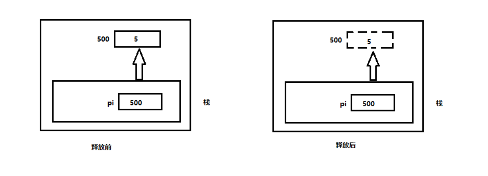

物联网实验室C指针培训讲义
1. 什么是指针
地址2.内存
| 作用域 | 生命周期 | |
|---|---|---|
| 全局内存 | 整个文件 | 应用程序的生命周期 |
| 静态内存 | 声明他的函数内部 | 应用程序的生命周期 |
| 自动内存 | 声明他的函数内部 | 函数执行时间内 |
| 动态内存 | 由引起该内存的指针决定 | 释放之前 |
3.指针变量
- 存放指针的变量
4.为什么用指针
- 动态分配
- 简洁的表达式
- 减少开销
- 保护数据
对比数组和链表,存储信息
- 十个学生的学号怎么储存
- 学号+姓名又怎么储存
简洁 -> 难懂
char *names[] = {"miller", "jones", "Anderson"};
printf("%c\n", *(*(names + 1) + 2));
printf("%c",names[1][2]);5.指针声明
*一般称之为解引
6.如何阅读指针
const int *p;7.取地址符&
- 在哪见过?
scanf里面, 为什么printf不用
8.指向函数的指针
- 定义
void (*fun)();
9.NULL和0
- NULL和0都可以用来初始化指针
int num = 0;
int *p1 = NULL;
int *p2 = 0;
p2 = #
*p2 = 0;
//两个0的区别10.void类型指针
- 通用类型的指针，任何类型指针都可以转成
void，也可以转回原来的类型
int num = 0;
int *p1 = #
void *p2 = (void *)p1;
int *p3 = (int *)p2;
//p1,p3等价，对比float转int再转float区别
float a = 3.1415;
int b = (float)a;
float c = b;
void和其他类型的指针永不相等，除了值为NULL的void指针（真香）sizeof操作符。可用在void类型指针上，不能用在void上。思考原因len1 = sizeof(void *);//合法 len2 = sizeof(void);//非法,这是什么意思 len_int = sizeof(int)//
11.指针操作符
- 加法
int vector[] = [24, 41, 7];
int *p = vector;//为什么不用取地址符
printf("%d\n",*pi);
pi += 1;
printf("%d\n",*pi);
pi += 1;
printf("%d\n",*pi);
//警防越界- 减法
int vector[] = [24, 41, 7];
int *p = vector + 2;
printf("%d\n",*pi);
pi -= 1;
printf("%d\n",*pi);
pi -= 1;
printf("%d\n",*pi);指针相减
指针之间也可以相减，差值通常没什么作用，但可以用来判断数组元素顺序
int vector[] = [24, 41, 7];
int *p1 = vector;
int *p2 = vector + 1;
int *p3 = vector + 2;
printf("p2 - p0: %d\n",p2 - p0)
12 动态内存管理
动态内存分配基本步骤
申请空间
使用
malloc类函数申请堆内存空间函数原型
void *malloc(int size);- 返回值是
void *类型，需要强转 - 示例
int *p = (int *)(malloc(sizeof(int))
- 返回值是
2. 使用空间
在程序中使用这块空间
3. 释放空间
- 使用完指针用`free`释放
- 函数原型`void free(void *p)`内存泄漏
丢失地址

int *p = (int *)(malloc(sizeof(int)) *p = 5; ... p = (int *)(malloc(sizeof(int))- 隐式内存泄漏
int *p; int count = 0; //记录 while(1){ p = (int *)(malloc(sizeof(100000)); printf("%d\n", count ++"); }
动态内存分配函数
malocrealocl重新分配内存
函数原型
void *realloc(void *ptr, size_t size);当第两参数为空时，同
malloc
calloc- 函数原型
void *calloc(size_t numElements,size_t elementSize); - 分配
numElements x elementSize大小的空间 - 例如
int *p = calloc(5, sizeof(int));分配了4个int大小的空间
- 函数原型
free- 释放指针
13. free函数释放内存
函数原型
void free(void *ptr);示例：
int *p = (int *)malloc(sizeof(int));
...
free(p);
- 释放后指针状态变为未定义的，一般释放后将指针显式的赋值为NULL。
- 对同一块内存进行多次释放造成异常。例如：
int *p1 = (int *)malloc(sizeof(int));
int *p2 = p1;
free(p1);
free(p2);14.迷途指针
如果内存已经释放，而指针还在引用原始内存，这样的指针成为迷途指针，也叫野指针
带来的问题：
- 如果访问内存，行为不可预期；
- 如果内存不可访问，则是段错误（段错误： 访问非法内存或者未申请的内存）
- 安全隐患
处理迷途指针
- 释放指针后置为NULL。
- 写一个特殊的
free函数 - 第三方工具检测
15.动态内存分配技术
- C的垃圾回收
- 资源获取即初始化
- 异常处理函数
16.常量与指针
- 什么是常量
int a = 5;
const int b = 10;
a = 6;
b = 15;- 数据类型和
const关键字顺序不重要：const int和int const等价 - 普通变量：常量&非常量，指针：常量指针&非常量指针。组合起来四种
- 常量指针
const int *p和指针常量int* const p- 常量指针，
(const int *)p,指针指向的数据是一个常量，指针可变，指向的值不可变 - 指针常量，
int* (const p),又叫常指针，指针是一个常量，指针不可变，值可变
- 常量指针，
int a1 = 10, a2 = 20;//非常量
const int b1 = 11, b2 = 12;//常量
//1.指向非常量的非常量指针
int *p1 = &a1;
a1 = 10;
*p1 = 1;
p1 = &a2;
p1 = &b1;//
//2.指向常量的非常量指针
const int *p2 = &b1;
p2 = &b2;
b2 = 1;//
*p2 = 1;//
//3.指向非常量的常量指针
int *const p3 = &a1;
p3 = &a2;
*p3 = 100;
a1 = 100;
//4.指向常量的常量指针
const int * const p4 = &b1;
p4 = &b2;
b2 = 19;
*p4 = 14;总结
假设指针
p指向变量a
| 指针类型 | p是否可修改 | *p是否可修改 | a是否可修改 |
|---|---|---|---|
| 指向非常量的非常量指针 | 是 | 是 | 是 |
| 指向常量的非常量指针 | 是 | 否 | 否 |
| 指向非常量的常量指针 | 否 | 是 | 是 |
| 指向常量的常量指针 | 否 | 否 | 否 |
17.指针和函数
1. 传递数据
交换数据,比较下面两个交换函数的区别
//指针传递数据，拷贝一份内容传递进去 void swapWithPointers(int *a, int *b){ int temp; temp = *a; *a = *b; *b = temp; } //值传递 void swap(int x, int y){ int temp; temp = x; x = y; y = temp; } // 主函数 int main(){ int a = 10, b = 11; int x = 3, y = 4; swapWithPointers(a, b); swap(x, y); printf("a = %d, b = %d\n",a, b); printf("x = %d, y = %d\n",x, y) }形参&实参
返回指针。比较下面的差别。
//初始化长度为size的数组值全为value int* allocateArray(int size, int value){ int * arr = (int *)malloc(size * sizeof(int));//开辟空间 int i = 0; for(i = 0;i < size;i ++){ arr[i] = value; } return arr; } int* allocateArray(int size, int value){ int arr[size]; int i = 0; for(i = 0;i < size;i ++){ arr[i] = value; } return arr; }传递指针的指针
用传递指针的方法在函数内部修改数据，那如果要修改指针呢？
程序1
```c
#include<stdio.h>
#include<stdlib.h>void pointer(int *p)
{
int a = 11;
printf(“\n\n进入函数”);
printf(“\np指向 %X , 地址是 %X, *p is %d”, p, &p, *p);
*p = 11;
printf(“\np指向 %X , 地址是 %X, *p is %d”, p, &p, *p);
p = &a;
printf(“\np指向 %X, 地址是 %X, *p is %d”, p, &p, *p);printf(“\n函数返回\n”);
}int main() {
int b = 22;
int *p = &b;
printf(“b的地址 %X\n”, &b);
printf(“p指向 %X , 地址是 %X, *p is %d”, p, &p, *p);
pointer(p);
printf(“\np指向 %X , 地址是 %X, *p is %d\n”, p, &p, *p);
system(“pause”);
return 0;
}/*
b的地址 4FF908
p指向 4FF908 , 地址是 4FF8FC, *p is 22进入函数
p指向 4FF908 , 地址是 4FF828, *p is 22
p指向 4FF908 , 地址是 4FF828, *p is 11
p指向 4FF814, 地址是 4FF828, *p is 11
函数返回p指向 4FF908 , 地址是 4FF8FC, *p is 11
请按任意键继续. . .
*/
 问题： 为什么进入函数内部后指针的地址发生了变化？回头看交换数据的代码 - 程序2 ```c #include<stdio.h> #include<stdlib.h> #include<string.h> void GetMemory(char *p, int num){ p = (char*)malloc(sizeof(char)*num); } int main() { char *str = NULL; GetMemory(str, 100); strcpy(str, "hello"); printf(str); system("pause"); return 0; }上面的代码有没有问题？为什么
程序3
void GetMemory(char **p, int num){ *p = (char*)malloc(sizeof(char)*num); } int main() { char *str = NULL; GetMemory(&str, 100); strcpy(str, "hello"); printf(str); system("pause"); return 0; }- 对比上一个程序，为什么？
2. 函数指针
申明函数指针
void (*foo)();返回值类型 （* 名称）(参数列表);
使用
int (* f)(int); int square(int num){ return num * num; } int main(){ int num = 5; f = square; printf("%d * %d = % d\n",num, num, f(num)); return 0; }为函数指针申明类型定义
typedef int(*funcptr)(int); funcptr fptr; fptr = square;
传递函数指针
#include<stdio.h> #include<stdlib.h> typedef int(*fptrOperation)(int, int); int add(int num1, int num2) { return num1 + num2; } int subtract(int num1, int num2) { return num1 - num2; } int compute(fptrOperation operation, int num1, int num2) { return operation(num1, num2); } int main() { printf("5 + 6 = %d\n", compute(add, 5, 6)); printf("5 - 6 = %d\n", compute(subtract, 5, 6)); return 0; }返回函数指针
//在上面的基础上 添加函数 fptrOperation select(char code) { switch (code){ case '+':return add; case '-':return subtract; } } int evaluate(char code, int num1, int num2) { fptrOperation operation = select(code); return operation(num1, num2); } //测试 int main() { printf("5 + 6 = %d\n", evaluate('+', 5, 6)); printf("5 - 6 = %d\n", evaluate('-', 5, 6)); return 0; }
函数指针数组
//修改代码 typedef int(*operation)(int, int); operation operations[128] = {NULL}; void initOperations(){ operations['+'] = add; operations['-'] = subtract; } int evaluateArray(char code,int num1, int num2){ fptrOperation operation; operation = operations[code]; return operation(num1, num2); }